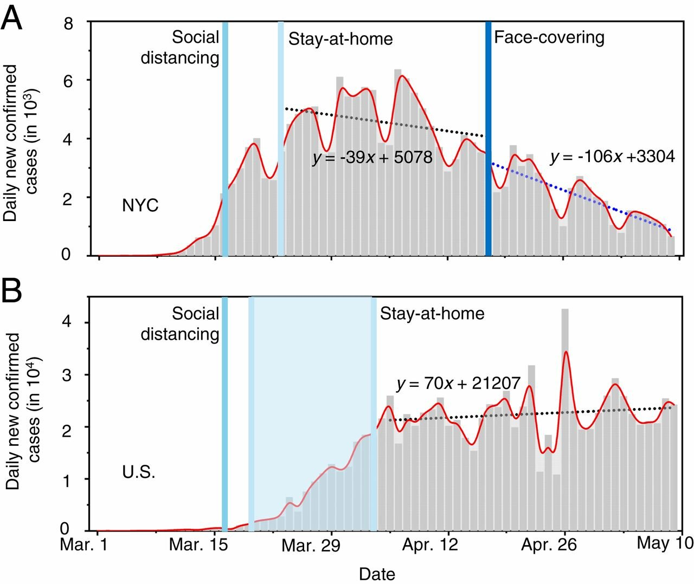

Wearing Masks is Effective

I’d like to highlight an interesting finding in a research paper documenting just how effective mask wearing is for reducing the spread of COVID-19.The paper cleverly noted that in New York City, social distancing first happened without masks, and only later, on April 17th, were masks mandated.The authors looked at the rate of change of COVID-19 before the mask mandate and after the mandate.They strengthen their case by contrasting what happened in NYC with what happened in the rest of the US.
The authors fit three different lines to the growth or drop in new COVID-19 cases.The important thing about such 'fit lines' is that their slope shows how fast the cases are growing or shrinking.Below, I have put the slope in parenthesis at the end of each region’s description.The lines in New York city were fit when cases were dropping which is why the numbers are negative and then more negative.
NYC cases in the 25 days
before
after
Prior to April 17th, cases in New York City were dropping through the use of social distancing alone.Right around April 17th, there is a distinct change in the rate of new COVID-19 cases.After people started wearing masks on April 17th, the cases started dropping faster.The speed of the decrease almost tripled with mask wearing.This contrasts with the rest of the United States, which saw no distinct change in the rate of new infections.
This paper provides compelling data about the importance of wearing masks.The data isn’t airtight, as I explain below, but it is ingenious and I think that it is fairly strong.I haven’t assembled it all, but I get the sense that the evidence is building that extensive mask wearing can really shape the trajectory of this epidemic.
I’m going to write another post (in the Action section) discussing all the issues around wearing a mask: when, how, and what type.Until then, note that
a mask is only effective when worn.
What follows are several possible weaknesses in the study my thoughts on each:
Some other event may have occurred on April 17th in NYC to change the infection rate.
Posted On: 2020-06-16T00:00:00
Posted By: Peter Khoury
Content Date: 2020-06-16
Download Date: 2021-05-13
Document ID: L0C04BZ92